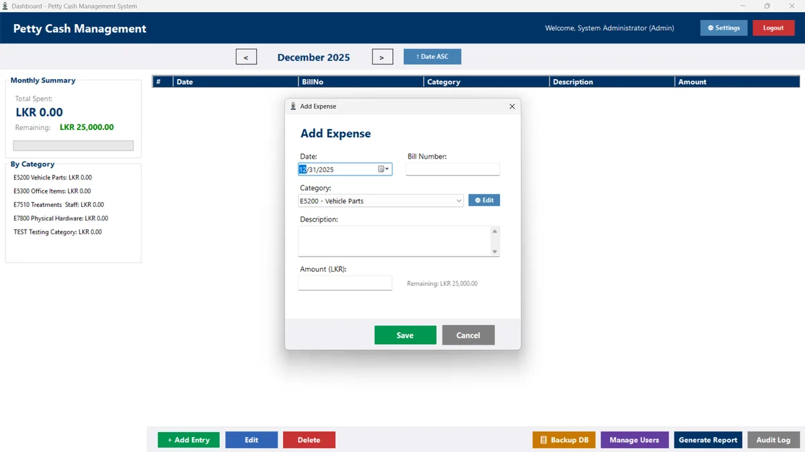
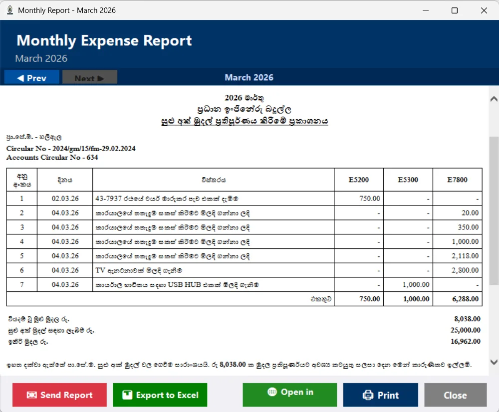
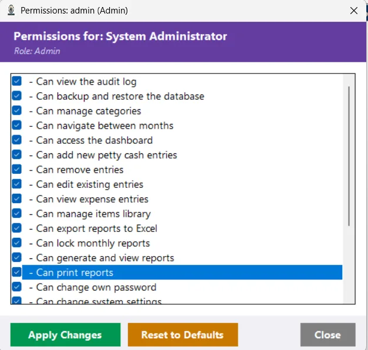
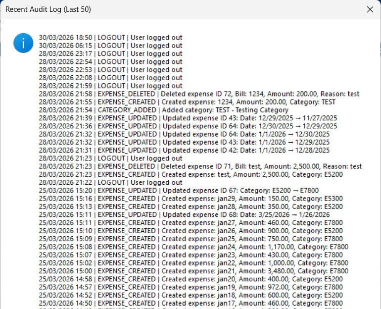

Petty Cash Management System
A VB.NET and SQLite desktop app that replaced a manual petty cash ledger at the Ceylon Electricity Board, Haliela branch.
- VB.NET
- SQLite
- .NET 8
- Windows Forms
- RoleSole developer
- ContextCEB Haliela on-the-job training and NDICT assessment
- StackVB.NET (.NET 8), SQLite
- Releasev1.3.0

The problem
During my on-the-job training at the Ceylon Electricity Board (CEB), Haliela branch, petty cash was tracked in a manual ledger. Every expense had to respect fixed limits, every month needed a printed report in the official format, and mistakes were hard to trace.
I built a desktop app to replace that ledger. It was also part of my NDICT (NVQ Level 5) assessment.
What it does

- Expense entry with rules that mirror how the branch handles petty cash.
- Monthly reports in Sinhala and English in the official CEB format, ready to print.
- Excel export with live formulas.
- Users and permissions: role-based access with 22+ separate permissions.
- Audit log of every action, backup and restore, and a setup wizard that installs it as a normal Windows app.
The business rules
The rules engine is the heart of the app. They come straight from how the branch handles petty cash:
- The monthly total cannot go over LKR 25,000.
- A single bill cannot go over LKR 5,000.
- Amounts must be positive, bill numbers cannot repeat, and dates cannot be in the future.
How it is built
A 3-tier architecture keeps the screens away from the database: Windows Forms screens, a business logic layer of services that apply the rules, and a data access layer of repositories over SQLite. SQLite keeps it fully offline with zero configuration, which suits a branch office with no server.
| Part | Technology |
|---|---|
| Language | VB.NET (.NET 8) |
| UI | Windows Forms |
| Database | SQLite 3 |
| Passwords | BCrypt.Net-Next (hashing) |
| Excel export | ClosedXML |
| Installer | Inno Setup 6 |
Reports and administration



How I built it
I developed it with significant help from AI pair programming (Gemini / Antigravity). The repository includes a development journey that documents that process, plus requirements, business rules, architecture, a user manual and an administrator guide. The final release is v1.3.0.